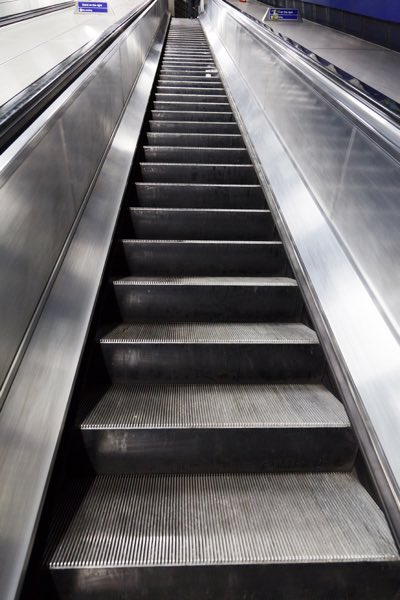

Escalator
I like an escalator because an escalator can never break, it can only become stairs. There would never be an Escalator Temporarily Out of Order sign, only "Escalator temporarily stairs. Sorry for the convenience."
-Mitch Hedberg